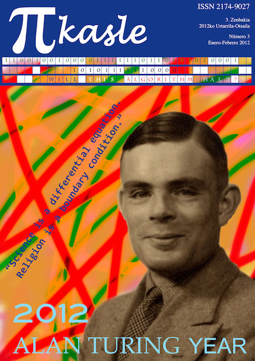
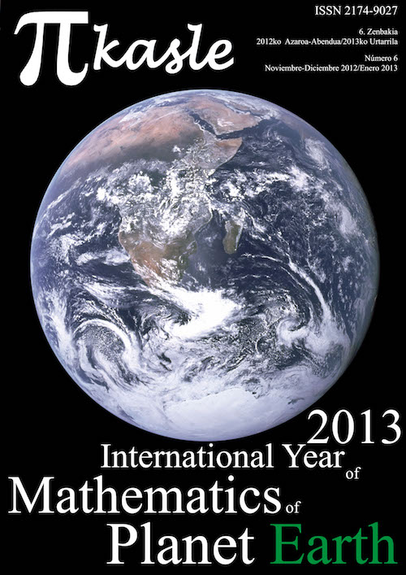
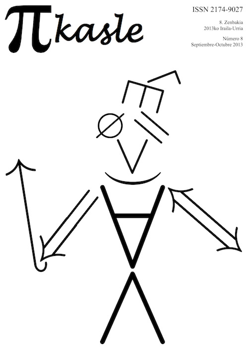

<!DOCTYPE html>
<!-- Microdata markup added by Google Structured Data Markup Helper. -->
<html lang="en"><head>
    <link rel="icon" href="./pikasle/pi.png"/>
    <meta charset="utf-8"/>
    <meta name="google" content="notranslate" />
    <meta http-equiv="Content-Language" content="es"/>
    <meta name="viewport" content="width=device-width, initial-scale=1, shrink-to-fit=no">
    <title>&pi;kasle (PIkasle)</title>
    <meta name="description" content="Descripción, números y eventos relacionados con la revista &pi;kasle (PIkasle) de las y los estudiantes de matemáticas de la Universidad del País Vasco" />

    <!--  Bootstrap core CSS  -->
    <link href="css/bootstrap.min.css" rel="stylesheet"/>

    <!--  Custom styles for this template  -->
    <link href="css/style_pikasle.css" rel="stylesheet"/>
</head>

  <body data-spy="scroll" data-target="#navbarCV" data-offset="105">
<div class="fixed-top" data-toggle="affix">
   <nav class="navbar navbar-toggleable-md navbar-inverse navbar-custom" id="general">
      <button class="navbar-toggler navbar-toggler-right" type="button" data-toggle="collapse" data-target="#navbarsExampleDefault" aria-controls="navbarsExampleDefault" aria-expanded="false" aria-label="Toggle navigation">
        <span class="navbar-toggler-icon"></span>
      </button>
      <a class="navbar-brand" href="#"></a>

      <div class="collapse navbar-collapse " id="navbarsExampleDefault">
        <ul class="navbar-nav mr-auto">

        </ul>

        <ul class="navbar-nav r-auto">
	<li class="nav-item">
            <a class="nav-link" href="pikasle_en.html">en</a>
          </li>
	<li class="nav-item">
            <a class="nav-link" href="pikasle_eus.html">eus</a>
          </li>
	<li class="nav-item active">
            <a class="nav-link" href="pikasle_es.html">es</a>
          </li>
        </ul>
      </div>

    </nav>
   <nav id="navbarCV" class="navbar-toggleable-md navbar-inverse navbar-custom2">
        <ul class="nav nav-pills">
	         <li class="nav-item"><a class="nav-link active" href="#" style="background-color: #0071A9!important;color: white!important;">&emsp;</a></li>
	         <li class="nav-item"><a class="nav-link" href="#descripcion">Descripción</a></li>
	         <li class="nav-item"><a class="nav-link" href="#numeros">Números</a></li>
		       <li class="nav-item"><a class="nav-link" href="#personas">Equipo y colaboradores</a></li>
		       <li class="nav-item"><a class="nav-link" href="#listaarticulos">Artículos</a></li>
	         <li class="nav-item"><a class="nav-link" href="#actividades">Actividades</a></li>
	         <li class="nav-item"><a class="nav-link" href="#recon">Premios</a></li>
	         <li class="nav-item"><a class="nav-link" href="#historia">Historia</a></li>
	         <li class="nav-item"><a class="nav-link" href="#misc">Miscelánea</a></li>
        </ul>

    </nav>
</div>


    <!--  Main jumbotron for a primary marketing message or call to action  -->

<div class="jumbotron">
      <div class="container">
        <center>
        <h3>Revista</h3><h3>Aldizkaria</h3>
        </center>

     </div>
</div>


<div class="container">
<div id="descripcion">
<p style="text-align:justify;">
$\pi kasle$ fue una revista digital creada por un grupo de estudiantes de matemáticas de la <a href="https://www.ehu.eus/">Universidad del País Vasco (UPV/EHU)</a> cuya actividad se desarrolló principalmente entre octubre de 2011 y junio de 2014. El nombre de la revista es la combinación de la letra griega &ldquo;$\pi$&rdquo;, que representa el área de un círculo de radio unidad, y la palabra &ldquo;ikasle&rdquo; que en euskera significa estudiante. El idioma de la revista fueron principalmente el castellano y el euskera.</p>
<p style="text-align:justify;">
Durante su periodo de actividad, $\pi kasle$ publicó 10 números digitales (con ISSN 2174-9027) que se podían leer y descargar gratuitamente de su página web <em>pikasle.com</em> (hoy en día inactiva) y 3 números impresos (con ISSN 2255-5714 y Depósito Legal BI 305-2013) que fueron distribuidos de forma gratuita entre el alumnado de matemáticas de la universidad.
</p>
<p style="text-align:justify;">
La temática de $\pi kasle$ fue la divulgación de las matemáticas a todos los niveles. Esto significa que los artículos fueron en su mayoría accesibles para el público general, aunque ha contenido artículos más técnicos con un público más limitado como el alumnado de matemáticas. Por ello, la filosofía de la revista fue hacer énfasis en la intuición y motivar a quien leyera sus artículos a ampliar la información dada sobre los temas expuestos en la revista.
</p>
<p style="text-align:justify;">
La revista obtuvo amplia difusión fuera de la facultad donde fue creada, siendo referenciada dentro del ámbito ibérico de la divulgación matemática y obteniendo una Mención de Honor en la modalidad &ldquo;Trabajos de Divulgación Científica. Medios de Comunicación&rdquo; de la <a href="http://anteriores.cienciaenaccion.org/es/2013/index-premiados.html"><em>XIV edición de Ciencia en Acción</em></a> y un primer premio en la cateogría de <em>Ciencias</em> de los <a href="https://www.ehu.eus/es/web/ikasleak/iii-deialdia"><em>III Premios al alumnado que mejor ha difundido la imagen de la UPV/EHU</em></a>.
</p>
<p style="text-align:justify;">
La revista $\pi kasle$ contó con el apoyo y financiación de la <a href="https://www.ehu.eus/web/ztf-fct/">Facultad de Ciencia y Tecnología (ZFT-FCT)</a> y la <em>UFI 11/52 Matemáticas y Aplicaciones</em> de la UPV/EHU.
</p>

</div>
<!-- Numeros
================================================== -->
<hr><div id="numeros">
<h1>Números</h1>
<p style="text-align:justify;">
De los 10 números digitales de $\pi kasle$, cuatro se publicaron en año académico 2011-12, tres en el año académico 2012-13 y tres en el año académico 2013-14. De los tres números impresos, dos se publicaron en el año académico 2012-13 y el resto en el año académico 2013-14.
</p>

<div class="row" style="padding-top:2em;">
<div class="col-md-4" style="text-align:center;">
<a href="pikasle/PIkasle01.pdf"></a>
<p style="margin:0;"><b>$\pi kasle$ Número 1<br>Octubre 2011</b>
</p><span><a style="float:left;" href="pikasle/PIkasle01.pdf">&ensp;PDF del número&ensp;</a>
<a style="float:right;" href="pikasle/portada01.jpg">&ensp;Cubierta del número&ensp;</a></span>
</div>
<div class="col-md-4" style="text-align:center;">
<a href="pikasle/PIkasle02.pdf"></a>
<p style="margin:0;"><b>$\pi kasle$ Número 2<br>Noviember-Diciembre 2011</b>
</p><span><a style="float:left;" href="pikasle/PIkasle02.pdf">&ensp;PDF del número&ensp;</a>
<a style="float:right;" href="pikasle/portada02.jpg">&ensp;Cubierta del número&ensp;</a></span>
</div>
<div class="col-md-4" style="text-align:center;">
<a href="pikasle/PIkasle03.pdf"></a>
<p style="margin:0;"><b>$\pi kasle$ Número 3<br>Enero-Febrero 2012</b>
</p><span><a style="float:left;" href="pikasle/PIkasle03.pdf">&ensp;PDF del número&ensp;</a>
<a style="float:right;" href="pikasle/portada03.jpg">&ensp;Cubierta del número&ensp;</a></span>
</div>
</div>


<div class="row" style="padding-top:3em;">
<div class="col-md-4" style="text-align:center;">
<a href="pikasle/PIkasle04.pdf"></a>
<p style="margin:0;"><b>$\pi kasle$ Número 4<br>Marzo-Abril 2012</b>
</p><span><a style="float:left;" href="pikasle/PIkasle04.pdf">&ensp;PDF del número&ensp;</a>
<a style="float:right;" href="pikasle/portada04.jpg">&ensp;Cubierta del número&ensp;</a></span>
</div>
<div class="col-md-4" style="text-align:center;">
<a href="pikasle/PIkasle05.pdf"></a>
<p style="margin:0;"><b>$\pi kasle$ Número 5<br>Septiembre-Octubre 2012</b>
</p><span><a style="float:left;" href="pikasle/PIkasle05.pdf">&ensp;PDF del número&ensp;</a>
<a style="float:right;" href="pikasle/portada05.jpg">&ensp;Cubierta del número&ensp;</a></span>
</div>
<div class="col-md-4" style="text-align:center;">
<a href="pikasle/PIkasle06.pdf"></a>
<p style="margin:0;"><b>$\pi kasle$ Número 6<br>Noviembre-Diciembre 2012/Enero 2013</b>
</p><span><a style="float:left;" href="pikasle/PIkasle06.pdf">&ensp;PDF del número&ensp;</a>
<a style="float:right;" href="pikasle/portada06.jpg">&ensp;Cubierta del número&ensp;</a></span>
</div>
</div>


<div class="row" style="padding-top:3em;">
<div class="col-md-4" style="text-align:center;">
<a href="pikasle/PIkasle07.pdf"></a>
<p style="margin:0;"><b>$\pi kasle$ Número 7<br>Febrero-Marzo-Abril-Mayo 2013</b>
</p><span><a style="float:left;" href="pikasle/PIkasle07.pdf">&ensp;PDF del número&ensp;</a>
<a style="float:right;" href="pikasle/portada07.jpg">&ensp;Cubierta del número&ensp;</a></span>
</div>
<div class="col-md-4" style="text-align:center;">
<a href="pikasle/PIkasle08.pdf"></a>
<p style="margin:0;"><b>$\pi kasle$ Número 8<br>Septiembre-Octubre 2012</b>
</p><span><a style="float:left;" href="pikasle/PIkasle08.pdf">&ensp;PDF del número&ensp;</a>
<a style="float:right;" href="pikasle/portada08.jpg">&ensp;Cubierta del número&ensp;</a></span>
</div>
<div class="col-md-4" style="text-align:center;">
<a href="pikasle/PIkasle09.pdf"></a>
<p style="margin:0;"><b>$\pi kasle$ Número 9<br>Noviembre-Diciembre 2013/Enero 2014</b>
</p><span><a style="float:left;" href="pikasle/PIkasle09.pdf">&ensp;PDF del número&ensp;</a>
<a style="float:right;" href="pikasle/portada09.jpg">&ensp;Cubierta del número&ensp;</a></span>
</div>
</div>

<div class="row" style="padding-top:3em;">
<div class="col-md-4" style="text-align:center;">
</div>
<div class="col-md-4" style="text-align:center;">
<a href="pikasle/PIkasle10.pdf"></a>
<p style="margin:0;"><b>$\pi kasle$ Número 10<br>Enero2014/Junio 2014</b>
</p><span><a style="float:left;" href="pikasle/PIkasle10.pdf">&ensp;PDF del número&ensp;</a>
<a style="float:right;" href="pikasle/portada10.jpg">&ensp;Cubierta del número&ensp;</a></span>
</div>
<div class="col-md-4" style="text-align:center;">
</div>
</div>

<!-- Personas
================================================== -->

</div><hr><div id="personas">
<h1>Equipo de la revista y colaboradores</h1>

<p style="text-align:justify;">
La revista $\pi kasle$ estaba dirigida por el <em>Comité Editorial</em>, el cual contaba con el apoyo del <em>Comité Asesor</em> y el <em>Equipo de Colaboradores</em>. Aparte de ello, la revista ha contado con colaboraciones esporádicas de diversas personas.
</p>

<p style="text-align:justify;">
A la hora de producir cada número de $\pi kasle$, el Comité Editorial se reunía con el Comité Asesor y el Equipo de Colaboradores para decidir que artículos van en cada número y repartir tareas. Tras ello, las y los autores del número mandan sus artículos al Comité Editorial. Este edita y maqueta una primera versión del número, diseñando también la portada. Posteriormente, en un ciclo de revisión-corrección, el Comité Editorial y Asesor ultiman el número que será finalmente publicado en la web.
</p>

<p style="text-align:justify;">
A continuación se listan las personas pertenecientes a cada uno de los grupos expuestos por ordenados, en primer lugar, por año de comienzo de actividad, y, en segundo lugar, por apellido. En el caso de los/as colaboradores/as esporádicos/as, el año indica el año de publicado de su artículo.
</p>

<div class="row">
<div class="col-md-6">

<h4><em>Equipo de la revista</em></h4>

<ul style="list-style-type:none;">
 <li>Maitane Amor (2011-14)</li>
 <li><a href="https://www.ehu.eus/bilatu/buscar/seekuser.php?lang=es&u=ZnZwZ2FnYWo=">Julio García</a> (2011-14)</li>
 <li>Amaia Gil (2011)</li>
 <li><a href="https://math.mit.edu/directory/profile.php?pid=1715">Ricardo Grande</a> (2011-14)</li>
 <li>Irune Gurrutxaga (2011-13)</li>
 <li>Aitziber Ibañez (2011-14)</li>
 <li>Irene Llana (2011-14)</li>
 <li>Ixiar Leunda (2011)</li>
 <li><a href="http://www.ehu.eus/~mtwmastm/">Marta Macho-Stadler</a> (2011-14)</li>
 <li><a href="https://sites.google.com/site/victormmanero/">Víctor Manero</a> (2011-14)</li>
 <li>Álex Olleta (2011-12)</li>
 <li><a href="https://tonellicueto.github.io">Josué Tonelli Cueto</a> (2011-14)</li>
 <li><a href="https://www.blogger.com/profile/13503073255613665071">Txomin Zukalaregi</a> (2011-14)</li>
 <li><a href="https://www.ljll.math.upmc.fr/barcena/">Jon Asier Bárcena</a> (2012-14)</li>
 <li><a href="">Álvaro Pardo</a> (2012-13)</li>
 <li><a href="http://www.imanolperez.com/">Imanol Pérez</a> (2012-14)</li>
 <li>Manuel Santos (2012-14)</li>
 <li>Anne Elorza (2013-14)</li>
 <li>Antonio Gallastegui (2013-14)</li>
</ul>

<h4><em>Comité Editorial</em></h4>

<ul style="list-style-type:none;">
 <li><a href="https://math.mit.edu/directory/profile.php?pid=1715">Ricardo Grande</a> (2011-14)</li>
 <li><a href="https://tonellicueto.github.io">Josué Tonelli Cueto</a> (2011-14)</li>
 <li><a href="http://www.imanolperez.com/">Imanol Pérez</a> (2014)</li>
 <li>Manuel Santos (2014)</li>
</ul>

<h4><em>Comité Asesor</em></h4>

<ul style="list-style-type:none;">
 <li><a href="http://www.ehu.eus/~mtwmastm/">Marta Macho-Stadler</a> (2011-14)</li>
 <li><a href="https://www.ehu.eus/bilatu/buscar/seekuser.php?lang=es&u=ZnZwZ2FnYWo=">Julio García</a> (2011-14)</li>
 <li><a href="https://sites.google.com/site/victormmanero/">Víctor Manero</a> (2012-14)</li>
</ul>

</div>
<div class="col-md-6">

<h4><em>Colaboradores/as esporádicos/as</em></h4>

<ul style="list-style-type:none;">
 <li><a href="http://www1.mat.uniroma1.it/people/fanelli/">Luca Fanelli</a> (2011)</li>
 <li><a href="https://sites.google.com/prod/view/mathmode/members?authuser=0#h.p_L0bTSHp_iP9G">Julen Álvarez-Aramberri</a> (2012)</li>
 <li>Andrea Aresti (2012,2013)</li>
 <li>Irantzu Barrio (2012)</li>
 <li>Arantzazu Elorduizapatarietxe (2012)</li>
 <li>Irune Etxarri (2012)</li>
 <li><a href="https://www.ehu.eus/es/web/biostit/jone-lazaro">Jone Lázaro</a> (2012)</li>
 <li>Maider Mateos (2012)</li>
 <li>Luis Martínez (2012)</li>
 <li><a href="https://energia.deusto.es/people/former_members/saray-de-casas-simon/">Saray de Casas</a> (2013)</li>
 <li><a href="http://www.mat.ufpb.br/dmufpb/index.php/professores/9-professores-efetivos/214-felipe-wallison-chaves">Felipe W. Chaves Silva</a> (2013)</li>
 <li>Julene Escudero (2013)</li>
 <li>Daniel Girela (2013)</li>
 <li>Josu Iturrizaga (2013)</li>
 <li><a href="http://math.stanford.edu/~jmadnick/">Jesse Madnick</a> (2013)</li>
 <li>Mario Morales (2013)</li>
 <li><a href="https://eu.wikipedia.org/wiki/Jone_Uria">Jone Uria</a> (2013)</li>
 <li>Nahia Agirregoikoa (2014)</li>
 <li>Sheila Carreño (2014)</li>
 <li><a href="https://josudoncel.github.io/index.html">Josu Doncel</a> (2014)</li>
 <li>Amaiur Holgado (2014)</li>
</ul>

<h4><em>Mantenimiento de la página web</em></h4>

<ul style="list-style-type:none;">
 <li>Maitane Amor (2011-14)</li>
 <li>Álex Olleta (2011-12)</li>
</ul>

<h4><em>Diseño de Portadas</em></h4>

<ul style="list-style-type:none;">
 <li><a href="https://tonellicueto.github.io">Josué Tonelli Cueto</a> (Números 1 al 9)</li>
 <li><a href="http://www.imanolperez.com/">Imanol Pérez</a> (Número 10)</li>
</ul>
</div>
</div>

<div class="row" style="padding-top:3em;">
<div class="col-md-5" style="text-align:center;padding-top: 0.8%;">
<a href="pikasle/fotogrupo2012.jpg"></a>
<p style="margin:0;"><em>Equipo de Colaboradores</em> de $\pi kasle$<br>a finales del curso académico 2011-12
</p></div>
<div class="col-md-7" style="text-align:center;">
<a href="pikasle/fotogrupo2013.jpg"></a>
<p style="margin:0;"><em>Equipo de Colaboradores</em> de $\pi kasle$<br>a finales del curso académico 2012-13
</p></div>
</div>

<div class="row" style="padding-top:2em;">
<div class="col-md-4" style="text-align:center;padding-top: 0.8%;">
<a href="pikasle/fotogrupo2013B.JPG"></a>
<p style="margin:0;"><em>Equipo de Colaboradores</em> de $\pi kasle$<br>en una celebración en mayo del 2013
</p></div>

<div class="col-md-4" style="text-align:center;">
<a href="pikasle/fotogrupo2014.JPG"></a>
<p style="margin:0;"><em>Equipo de Colaboradores</em> de $\pi kasle$<br>a finales del curso académico 2013-14
</p></div>
<div class="col-md-4" style="text-align:center;padding-top: 3%;">
<a href="pikasle/fotgrupoFOUNDERS.jpg"></a>
<p style="margin:0;"><a href="https://tonellicueto.github.io">Josué Tonelli Cueto</a> and <a href="https://math.mit.edu/directory/profile.php?pid=1715">Ricardo Grande</a>, <br> founders and original editors of $\pi kasle$<br>
<small>(&copy;2014 Izaskun Lekuona)</small>
</p></div>
</div>

<!-- Articulos
================================================== -->

</div><hr><div id="listaarticulos">
<h1>Artículos</h1>

<p stule="text-align:justify;">
Los artículos de la revista $\pi kasle$ se dividían en ocho secciones. A continuación, se describe cada una de las secciones indicando sus responsable habituales y se da una lista de citas de los artículos publicados en cada una de ellas.
</p>

<h3>0.- <em>Comunidad y Noticias</em></h3>
<p style="text-align:justify;">
La mayoría de las artículos en esta sección son breves notas de prensa acerca de curiosidades, eventos y sucesos de matemáticos que no son firmadas. Sin embargo, esta sección contiene también artículos más desarrollados y firmados sobre diversos temas, que van desde experiencias personales en un evento hasta columnas de opinión.
</p>

<ul style="list-style-type:none;">
 <li><a href="pikasle/PIkasle01.pdf#page=4">M. Macho-Stadler, <em>Amazings Bilbao 2011</em>, Revista $\pi kasle$ Aldizkaria <b>1</b> (2011), 4-5.</a></li>
 <li><a href="pikasle/PIkasle01.pdf#page=6">L. Fanelli, <em>Jóvenes matemáticos a orillas del río Duero</em>, Revista $\pi kasle$ Aldizkaria <b>1</b> (2011), 6.</a></li>
 <li><a href="pikasle/PIkasle02.pdf#page=4">I. Llana, R. Grande, <em>Clausura de la exposición &ldquo;Con A de Astrónomas&rdquo;</em>, Revista $\pi kasle$ Aldizkaria <b>2</b> (2011), 4-5.</a></li>
 <li><a href="pikasle/PIkasle03.pdf#page=4">I. Llana, R. Grande, <em>Conferencia de Alfio Quarteroni</em>, Revista $\pi kasle$ Aldizkaria <b>3</b> (2012), 4.</a></li>
 <li><a href="pikasle/PIkasle03.pdf#page=5">I. Gurrutxaga, <em>El Centenario de la RSME y el reconocimiento de la ciencia matemática</em>, Revista $\pi kasle$ Aldizkaria <b>3</b> (2012), 5-6.</a></li>
 <li><a href="pikasle/PIkasle03.pdf#page=7">L. Martínez, <em>Hágalo usted mismo: Un enfoque (quasi) autodidacta para aprender teoría de grafos</em>, Revista $\pi kasle$ Aldizkaria <b>3</b> (2012), 7-9.</a></li>
 <li><a href="pikasle/PIkasle04.pdf#page=5">J. Tonelli Cueto, <em>Gowers se rebela</em>, Revista $\pi kasle$ Aldizkaria <b>4</b> (2012), 5.</a></li>
 <li><a href="pikasle/PIkasle05.pdf#page=6">A. Ibañez, <em>Física en el juzgado</em>, Revista $\pi kasle$ Aldizkaria <b>5</b> (2012), 6.</a></li>
 <li><a href="pikasle/PIkasle05.pdf#page=6">A. Aresti, J. Tonelli Cueto, <em>XIII Encuentro Nacional de Estudiantes de Matemáticas</em>, Revista $\pi kasle$ Aldizkaria <b>5</b> (2012), 6-8.</a></li>
 <li><a href="pikasle/PIkasle05.pdf#page=9">J.A. Bárcena, <em>Amazings Bilbao 2012, so amazing</em>, Revista $\pi kasle$ Aldizkaria <b>5</b> (2012), 9-10.</a></li>
 <li><a href="pikasle/PIkasle06.pdf#page=5">J. Madnick, <em>¿Son las matemáticas un arte?</em>, Revista $\pi kasle$ Aldizkaria <b>6</b> (2013), 5.</a></li>
 <li><a href="pikasle/PIkasle06.pdf#page=6">A. Ibañez, <em>Vodka marca Mendeliev</em>, Revista $\pi kasle$ Aldizkaria <b>6</b> (2013), 6.</a></li>
 <li><a href="pikasle/PIkasle07.pdf#page=6">J.A. Bárcena, <em>Cursos on-line para estudiantes</em>, Revista $\pi kasle$ Aldizkaria <b>7</b> (2013), 6.</a></li>
 <li><a href="pikasle/PIkasle08.pdf#page=7">J. Tonelli Cueto, <em>$\pi$kasle's Martin Gardner Celebration of Mind</em>, Revista $\pi kasle$ Aldizkaria <b>8</b> (2013), 7-9.</a></li>
 <li><a href="pikasle/PIkasle08.pdf#page=10">A. Gallastegui, <em>Estadistiko Jardunaldi bat (Euskera) [Una jornada estadística]</em>, Revista $\pi kasle$ Aldizkaria <b>8</b> (2013), 10.</a></li>
 <li><a href="pikasle/PIkasle08.pdf#page=11">A. Gallastegui, <em>Una Jornada de Estadística</em>, Revista $\pi kasle$ Aldizkaria <b>8</b> (2013), 11.</a></li>
 <li><a href="pikasle/PIkasle08.pdf#page=12">J.A. Bárcena, <em>La MM-ISSS, una experiencia inolvidable</em>, Revista $\pi kasle$ Aldizkaria <b>8</b> (2013), 12.</a></li>
 <li><a href="pikasle/PIkasle08.pdf#page=13">R. Grande, <em>Matemáticas en Aotearoa</em>, Revista $\pi kasle$ Aldizkaria <b>8</b> (2013), 13-15.</a></li>
 <li><a href="pikasle/PIkasle09.pdf#page=5">A. Gallastegui, <em>#Kultura Zientifikoa 1. Jaialdia (Euskera) [Primer festival de cultura científica]</em>, Revista $\pi kasle$ Aldizkaria <b>9</b> (2014), 5.</a></li>
 <li><a href="pikasle/PIkasle10.pdf#page=6">I. Llana, <em>The Imitation Game</em>, Revista $\pi kasle$ Aldizkaria <b>10</b> (2014), 6.</a></li>
</ul>

<h3>1.- <em>Al acabar la carrera, ¿qué?</em></h3>

<p style="text-align:justify;">
En esta sección, a cargo de Víctor Manero, se describen diversas opciones para las y los graduados en matemáticas tal como el título indica.
</p>

<ul style="list-style-type:none;">
 <li><a href="pikasle/PIkasle02.pdf#page=6">V. Manero, <em>Al acabar la carrera, ¿qué? &ndash; Máster de Iniciación a la Investigación en Matemáticas en matg5</em>, Revista $\pi kasle$ Aldizkaria <b>2</b> (2011), 6-7.</a></li>
 <li><a href="pikasle/PIkasle03.pdf#page=10">I. Barrio, J. Álvarez-Aramberri, <em>Al acabar la carrera, ¿qué? &ndash; Máster de Modelización Matemática, Estadística y Computación</em>, Revista $\pi kasle$ Aldizkaria <b>3</b> (2012), 10-11.</a></li>
 <li><a href="pikasle/PIkasle05.pdf#page=6">V. Manero, M. Mateos, <em>Al acabar la carrera, ¿qué? &ndash; Entrevista con Maider Mateos del Pino</em>, Revista $\pi kasle$ Aldizkaria <b>4</b> (2012), 6-7.</a></li>
 <li><a href="pikasle/PIkasle06.pdf#page=8">M. Morales, V. Manero, <em>Al acabar la carrera, ¿qué? &ndash; Entrevista a Mario Morales</em>, Revista $\pi kasle$ Aldizkaria <b>6</b> (2013), 8-9.</a></li>
 <li><a href="pikasle/PIkasle07.pdf#page=8">D. Girela, <em>Al acabar la carrera, ¿qué? (&ndash; Máster en Modelización para la Ciencia y la Ingeniería de la Universitat Autònoma de Barcelona)</em>, Revista $\pi kasle$ Aldizkaria <b>7</b> (2013), 8-9.</a></li>
 <li><a href="pikasle/PIkasle08.pdf#page=17">F.W. Chaves Silva, V. Manero, <em>Al acabar la carrera, ¿qué? &ndash; Entrevista con Felipe W. Chaves Silva</em>, Revista $\pi kasle$ Aldizkaria <b>8</b> (2013), 17-18.</a></li>
 <li><a href="pikasle/PIkasle09.pdf#page=6">J. Doncel, <em>Al acabar la carrera, ¿qué? (&ndash; Redes de Telecomunicaciones)</em>, Revista $\pi kasle$ Aldizkaria <b>9</b> (2014), 6.</a></li>
 <li><a href="pikasle/PIkasle10.pdf#page=6">S. Carreño, V. Manero, <em>Al acabar la carrera, ¿qué? &ndash; Entrevista a Sheila Carreño</em>, Revista $\pi kasle$ Aldizkaria <b>10</b> (2014), 6-7.</a></li>
</ul>

<h3>2.- <em>Reseñas</em></h3>
<p style="text-align:justify;">
En esta sección, quien lo desea hace una reseña de un libro de su elección. Esta es la sección más joven de la revista.
</p>

<ul style="list-style-type:none;">
 <li><a href="pikasle/PIkasle05.pdf#page=11">I. Llana, <em>Reseña: La rebelión de los números</em>, Revista $\pi kasle$ Aldizkaria <b>5</b> (2012), 11.</a></li>
 <li><a href="pikasle/PIkasle06.pdf#page=7">J. Tonelli Cueto, <em>Reseña: ¿Qué es la geometría no-euclídea?</em>, Revista $\pi kasle$ Aldizkaria <b>6</b> (2013), 7.</a></li>
 <li><a href="pikasle/PIkasle07.pdf#page=7">M. Santos, <em>Reseña: Ciencia e Hipótesis</em>, Revista $\pi kasle$ Aldizkaria <b>7</b> (2013), 7.</a></li>
 <li><a href="pikasle/PIkasle08.pdf#page=16">M. Macho-Stadler, <em>Reseña: Mati y sus mateaventuras: Hasta el infinito y más allá</em>, Revista $\pi kasle$ Aldizkaria <b>8</b> (2013), 16.</a></li>
</ul>


<h3>3.- <em>Entrevistas</em></h3>
<p style="text-align:justify;">
Como indica el nombre, en esta sección, se realizaban entrevistas a diversas personas del mundo matemático tanto español como internacional.
</p>

<ul style="list-style-type:none;">
 <li><a href="pikasle/PIkasle01.pdf#page=7">R. Grande, J. Tonelli Cueto, <em>Entrevista a Raúl Ibañez</em>, Revista $\pi kasle$ Aldizkaria <b>1</b> (2011), 7-9.</a></li>
 <li><a href="pikasle/PIkasle02.pdf#page=8">A. Gil, I. Leunda, <em>Entrevista a Irati Murua (Euskera)</em>, Revista $\pi kasle$ Aldizkaria <b>2</b> (2011), 8-9.</a></li>
 <li><a href="pikasle/PIkasle04.pdf#page=8">J. Tonelli Cueto, <em>Charla con los organizadores del Año de Galois</em>, Revista $\pi kasle$ Aldizkaria <b>4</b> (2012), 8-11.</a></li>
 <li><a href="pikasle/PIkasle05.pdf#page=12">J. Tonelli Cueto, R. Grande, <em>Entrevista a Carlos Beltrán y Luis Miguel Pardo</em>, Revista $\pi kasle$ Aldizkaria <b>5</b> (2012), 12-16.</a></li>
 <li><a href="pikasle/PIkasle06.pdf#page=10">R. Grande, J. Tonelli Cueto, <em>Interview with David Cox (Inglés) [Entrevista con David Cox]</em>, Revista $\pi kasle$ Aldizkaria <b>6</b> (2013), 10-12.</a></li>
 <li><a href="pikasle/PIkasle06.pdf#page=13">R. Grande, J. Tonelli Cueto, I. Llana (traducción), <em>David Cox-ekiko elkarrizketa (Euskera) [Entrevista con David Cox]</em>, Revista $\pi kasle$ Aldizkaria <b>6</b> (2013), 13-15.</a></li>
 <li><a href="pikasle/PIkasle07.pdf#page=10">J. Tonelli Cueto, R. Grande, <em>Interview with Christiane Rousseau (Inglés) [Entrevista con Christiane Rousseau]</em>, Revista $\pi kasle$ Aldizkaria <b>7</b> (2013), 10-11.</a></li>
 <li><a href="pikasle/PIkasle08.pdf#page=19">J. Tonelli Cueto, <em>Entrevista a Manuel de León</em>, Revista $\pi kasle$ Aldizkaria <b>8</b> (2013), 19-20.</a></li>
 <li><a href="pikasle/PIkasle09.pdf#page=8">R. Grande, J. Tonelli Cueto, <em>Interview with Peter Neumann (Inglés) [Entrevista con Peter Neumann]</em>, Revista $\pi kasle$ Aldizkaria <b>9</b> (2014), 8-10.</a></li>
 <li><a href="pikasle/PIkasle10.pdf#page=9">J. Tonelli Cueto, R. Grande, <em>Interview with Ronald de Vore (Inglés) [Entrevista con Ronald de Vore]</em>, Revista $\pi kasle$ Aldizkaria <b>10</b> (2014), 9-13.</a></li>
</ul>

<h3>4.- <em>Matemáticas</em> y mutaciones de la sección</h3>

<p style="text-align:justify;">
En esta sección y sus variantes, se tratan o bien las matemáticas o bien su relación con otras disciplinas como pueden ser otras ciencias, el arte, etc.
</p>

<ul style="list-style-type:none;">
 <li><a href="pikasle/PIkasle02.pdf#page=10">J. Tonelli Cueto, <em>Moléculas en el espejo ...o cómo la topología se manifiesta en la química</em>, Revista $\pi kasle$ Aldizkaria <b>2</b> (2011), 10-13.</a></li>
 <li><a href="pikasle/PIkasle03.pdf#page=13">I. Gurrutxaga, <em>Urrezko Zenbakia (Euskera) [El número de oro]</em>, Revista $\pi kasle$ Aldizkaria <b>3</b> (2012), 13-14.</a></li>
 <li><a href="pikasle/PIkasle04.pdf#page=12">J. Lázaro, <em>Maien matematika (Euskera) [La matemática de los mayas]</em>, Revista $\pi kasle$ Aldizkaria <b>4</b> (2012), 12-14.</a></li>
 <li><a href="pikasle/PIkasle05.pdf#page=17">I. Etxarri, A. Elorduizapatarietxe, <em>Sudokua. Bideo-jokoak baino famatuagoa? (Euskera) [El sudoku, ¿más famoso que los videojuegos?]</em>, Revista $\pi kasle$ Aldizkaria <b>5</b> (2012), 17-18.</a></li>
 <li><a href="pikasle/PIkasle06.pdf#page=16">I. Pérez, <em>Erdös y los inversos de los números primos</em>, Revista $\pi kasle$ Aldizkaria <b>6</b> (2013), 16-17.</a></li>
 <li><a href="pikasle/PIkasle07.pdf#page=20">M. Santos, <em>Platonismo y matemáticas. Visión general, axiomas y objetos matemáticos</em>, Revista $\pi kasle$ Aldizkaria <b>6</b> (2013), 20-21.</a></li>
 <li><a href="pikasle/PIkasle07.pdf#page=12">I. Pérez, <em>La catenaria y el coseno hiperbólico</em>, Revista $\pi kasle$ Aldizkaria <b>7</b> (2013), 12.</a></li>
 <li><a href="pikasle/PIkasle07.pdf#page=15">A. Aresti, J. Escudero, <em>abraMATabra (Euskera)</em>, Revista $\pi kasle$ Aldizkaria <b>7</b> (2013), 15-17.</a></li>
 <li><a href="pikasle/PIkasle07.pdf#page=18">J. Uria, <em>Eboluzioa (Euskera) [Evolución]</em>, Revista $\pi kasle$ Aldizkaria <b>7</b> (2013), 18-19.</a></li>
 <li><a href="pikasle/PIkasle08.pdf#page=21">J. Iturrizaga, S. de Casas, <em>Matematika Zineman (Euskera) [Matemática en el cine]</em>, Revista $\pi kasle$ Aldizkaria <b>8</b> (2013), 21-23.</a></li>
 <li><a href="pikasle/PIkasle09.pdf#page=11">V. Manero, <em>¿Cómo calcular la distancia a las estrellas? El paralaje</em>, Revista $\pi kasle$ Aldizkaria <b>9</b> (2014), 11-12.</a></li>
 <li><a href="pikasle/PIkasle09.pdf#page=13">A. Holgado, N. Agirregoikoa, <em>Fantasiazko Eraikinak (I) (Euskera) [Edificios de fantasía (I)]</em>, Revista $\pi kasle$ Aldizkaria <b>9</b> (2014), 13-15.</a></li>
 <li><a href="pikasle/PIkasle10.pdf#page=14">A. Holgado, N. Agirregoikoa, <em>Fantasiazko Eraikinak (II) (Euskera) [Edificios de fantasía (II)]</em>, Revista $\pi kasle$ Aldizkaria <b>10</b> (2014), 14-16.</a></li>
 <li><a href="pikasle/PIkasle10.pdf#page=19">M. Santos, <em>Henri Poincaré: Matemático y filósofo</em>, Revista $\pi kasle$ Aldizkaria <b>10</b> (2014), 19-20.</a></li>
</ul>

<h3>5.- <em>Un paseo por la historia</em></h3>
<p style="text-align:justify;">
Esta sección, a cargo principalmente de Irune Gurrutxaga y Aitziber Ibañez, se tratan diversos temas de la historia de las matemáticas. Esta es la única sección con un artículo en cada número.
</p>

<ul style="list-style-type:none;">
 <li><a href="pikasle/PIkasle01.pdf#page=10">I. Gurrutxaga, A. Ibañez, <em>Maria Gaetana Agnesi</em>, Revista $\pi kasle$ Aldizkaria <b>1</b> (2011), 10-11.</a></li>
 <li><a href="pikasle/PIkasle02.pdf#page=14">I. Gurrutxaga, A. Ibañez, <em>Cubos, gotas de cristal y un perro terrorífico</em>, Revista $\pi kasle$ Aldizkaria <b>2</b> (2011), 14-15.</a></li>
 <li><a href="pikasle/PIkasle03.pdf#page=14">A. Ibañez, <em>Florence Nightingale</em>, Revista $\pi kasle$ Aldizkaria <b>3</b> (2012), 14-15.</a></li>
 <li><a href="pikasle/PIkasle04.pdf#page=15">J. Tonelli Cueto, <em>Emmy Noether: La madre del álgebra abstracta</em>, Revista $\pi kasle$ Aldizkaria <b>4</b> (2012), 15-16.</a></li>
 <li><a href="pikasle/PIkasle05.pdf#page=19">I. Gurrutxaga, <em>Paul Erdös ...el mago de Budapest</em>, Revista $\pi kasle$ Aldizkaria <b>5</b> (2012), 19-21.</a></li>
 <li><a href="pikasle/PIkasle06.pdf#page=18">A. Ibañez, <em>Los enigmas de Turing</em>, Revista $\pi kasle$ Aldizkaria <b>6</b> (2013), 18-19.</a></li>
 <li><a href="pikasle/PIkasle07.pdf#page=15">I. Gurrutxaga, <em>Srinivasa Ramanujan ...el genio de la intuición</em>, Revista $\pi kasle$ Aldizkaria <b>7</b> (2013), 15-17.</a></li>
 <li><a href="pikasle/PIkasle08.pdf#page=24">J. Tonelli Cueto, <em>William Thurston: El visionario de la tercera dimensión</em>, Revista $\pi kasle$ Aldizkaria <b>8</b> (2013), 24-27.</a></li>
 <li><a href="pikasle/PIkasle09.pdf#page=16">A. Ibañez, <em>Stefan Banach</em>, Revista $\pi kasle$ Aldizkaria <b>9</b> (2014), 16-18.</a></li>
 <li><a href="pikasle/PIkasle10.pdf#page=17">A. Ibañez, <em>El Café Escocés</em>, Revista $\pi kasle$ Aldizkaria <b>10</b> (2014), 17-18.</a></li>
</ul>

<h3>6.- <em>El concurso de Txomin</em></h3>

<p style="text-align:justify;">
El consurso de Txomin era un concurso de problemas organizado por el matemático Txomin Zukalaregi. En este concurso, se proponía un problema, que se colgaba en cada aula de la facultad, y se daban diversos premios a quienes resolvían el problema. En esta sección, la revista $\pi kasle$ publicaba los últimos problemas y soluciones para darles más difusión entre el alumnado.
</p>

<!-- Actividades
================================================== -->

</div><hr><div id="actividades">
<h1>Actividades</h1>

<p style="text-align:justify;">
Durante su existencia, $\pi kasle$ organizó diversas actividades dirigidas tanto al alumnado de matemáticas como al público general.
</p>

<h4 id="infinitesimales"><em>I. Concurso de Relatos Infinitesimales / Eleberri Infinitesimalak I. Lehiaketa</em></h4>

<p style="text-align:justify;">
Este concurso literario consistía en escribir un relato de 37 palabras o menos y estaba abierto a cualquier persona residente en Euskadi. Hubo dos categorías: castellano y euskera. El jurado estuvo compuesto por Ricardo Grande, Marta Macho (presidenta), María Merino y Josué Tonelli Cueto. En castellano, el relato infinitesimal ganador fue &ldquo;Un...todo&rdquo; de Oihane Ruiz Díaz, y, en euskera, fue &ldquo;Nire bektore zuzentzailea: zatoz.&rdquo; de Mari Joxe Azurtza Sorrondegi. Ambos relatos fueron publicados y pueden leerse en el <a href="pikasle/PIkasle03.pdf#page=12">Número 3 de la Revista $\pi kasle$</a>.
</p>

<div class="row" style="padding-bottom:2em;">
<div class="col-md-6" style="text-align:center;padding-top: 3%;">

<p style="margin:0;">Póster del concurso
</p></div>
<div class="col-md-3" style="text-align:center;padding-top: 3%;">

<p style="margin:0;">Oihane Ruiz Díaz,<br>ganadora en castellano
</p></div>
<div class="col-md-3" style="text-align:center;padding-top: 3%;">

<p style="margin:0;">MariJoxe Azurtza Sorrondegi,<br>ganadora en euskera
</p></div>
</div>

<h4 id="celebrationofmind"><em>$\pi$kasle's Martin Gardner Celebration of Mind</em></h4>

<p style="text-align:justify;">
La <a href="https://www.celebrationofmind.org/"><em>Martin Gardner Celebration of Mind</em></a> es un evento global anual, promovido por la <a href="https://www.gathering4gardner.org/">Fundación Gathering4Gardner</a>, en el que personas alrededor del mundo realizan actividades, generalmente abiertas al público, alrededor del cumpleaños de <a href="https://en.wikipedia.org/wiki/Martin_Gardner">Martin Gardner</a>, 21 de Octubre, para celebrar la figura del divulgador de las matemáticas. Estas actividades se centran en explorar y disfrutar de puzles, juegos, magia y matemáticas.
</p>
<p style="text-align:justify;">
$\pi kasle$ se unió a la <em>Celebration of Mind</em> de 2013, realizando el 23 de octubre un evento abierto a todas y todos los estudiantes interesados del Campus de Leioa de la Universidad del País Vasco. En este evento, varias y varios voluntarios distribuidos por mesas mostraban, de una forma interactiva, puzles, juegos, magia y curiosidades matemáticas a las personas asistentes. El evento tuvo una asistencia de alrededor un centenar de personas.
</p>
<p style="text-align:justify;">
El evento fue organizado por Josué Tonelli Cueto y fue realizado el siguiente equipo de personas:</p>

<div class="row">
<div class="col-md-3">
<ul style="list-style-type:none;">
<li>Pedro Alegría</li>
<li>Maitane Amor</li>
<li>Nerea Diez</li>
</ul>
</div>
<div class="col-md-3">
<ul style="list-style-type:none;">
<li>Anne Elorza</li>
<li>Raúl Ibañez</li>
<li>Álvaro Lozano-Rojo</li>
</ul>
</div>
<div class="col-md-3">
<ul style="list-style-type:none;">
<li>Marta Macho-Stadler</li>
<li>Víctor Manero</li>
<li>Imanol Pérez</li>
</ul>
</div>
<div class="col-md-3">
<ul style="list-style-type:none;">
<li>Oihane Ruiz Díaz</li>
<li>Manuel Santos</li>
<li>Josué Tonelli Cueto</li>
</ul>
</div>
</div>

<div class="row" style="padding-bottom:2em;">
<div class="col-md-2" style="text-align:center;padding-top: 3%;"></div>
<div class="col-md-4" style="text-align:center;padding-top: 3%;">

<p style="margin:0;">Poster of<br><em>$\pi$kasle's Martin Gardner Celebration of Mind</em>
</p></div>
<div class="col-md-4" style="text-align:center;padding-top: 4.5%;">

<p style="margin:0;">Logo of<br><em>$\pi$kasle's Martin Gardner Celebration of Mind</em>
</p></div>
<div class="col-md-2" style="text-align:center;padding-top: 3%;"></div>
</div>

<div class="row" style="padding-bottom:2em;">
<div class="col-md-4" style="text-align:center;padding-top: 3%;">

<p style="margin:0;">
</p></div>
<div class="col-md-4" style="text-align:center;padding-top: 3%;">

<p style="margin:0;">
</p></div>
<div class="col-md-4" style="text-align:center;padding-top: 3%;">

<p style="margin:0;">
</p></div>
</div>

<div class="row" style="padding-bottom:2em;">
<div class="col-md-4" style="text-align:center;padding-top: 3%;">

<p style="margin:0;">
</p></div>
<div class="col-md-4" style="text-align:center;padding-top: 3%;">

<p style="margin:0;">
</p></div>
<div class="col-md-4" style="text-align:center;padding-top: 3%;">

<p style="margin:0;">
</p></div>
</div>

<div class="row" style="padding-bottom:2em;">
<div class="col-md-4" style="text-align:center;padding-top: 3%;">

<p style="margin:0;">
</p></div>
<div class="col-md-4" style="text-align:center;padding-top: 3%;">

<p style="margin:0;">
</p></div>
<div class="col-md-4" style="text-align:center;padding-top: 3%;">

<p style="margin:0;">
</p></div>
</div>

<p style="text-align:justify;">
Junto con el <em>$\pi$kasle's Martin Gardner Celebration of Mind</em>, se convocó el <em> Concurso de trabajos sobre Martin Gardner/Martin Gardner-i buruzko lanen lehiaketa</em> en el que podía participar cualquier persona con un trabajo, en cualquier formato, de Martin Gardner y en el que se ofrecía de premio la autobiografía de Martin Gardner <em>Undiluted Hocus-Pocus: The Autobiography</em>. El jurado estuvo compuesto por Pedro Alegría, Nerea Diez, Ricardo Grande, Marta Macho-Stadler, Víctor Manero y Josué Tonelli Cueto. Los ganadores del concurso fueron Adiran Garaizar y Nerea Arrarte quienes participaron con un flexicubo sobre Martin Gardner.
</p>

<div class="row" style="padding-bottom:2em;">
<div class="col-md-5" style="text-align:center;padding-top: 1em;">

<p style="margin:0;">Editores Josué Tonelli Cueto y Ricardo Grande,<br>con los ganadores Nerea Arrarte y Adiran Garaizar
</p></div>
<div class="col-md-7" style="text-align:center;">

<p style="margin:0;">
Flexicubo expuesto en la Facultad de Ciencia y Tecnología de la UPV/EHU
</p></div>
</div>

<div class="row" style="padding-bottom:2em;">
<div class="col-md-4" style="text-align:center;padding-top: 6%;">

</div>
<div class="col-md-3" style="text-align:center;">

<p style="margin:0;">
</p></div>
<div class="col-md-5" style="text-align:center;padding-top: 6%;">

<p style="margin:0;">
</p></div>
</div>

<h4 id="workshopmagic">$\pi$kasle's <em>Mathematics, Magic and Mystery</em> Workshop</h4>

<p style="text-align:justify;">
Cada mes de abril tiene lugar el <a href="http://www.ams.org/mathstatmonth/msamhome"><em>Mathematics and Statistics Awareness Month</em></a> (Mes del Concienciación de las Matemáticas y la Estadística) promovido por las sociedades matemáticas americanas. Cada año se enfatiza un tema distinto y, en 2014, dicho tema fue <a href="http://www.mathaware.org/mam/2014/"><em>Mathematics, Magic, and Mystery</em></a> (Matemáticas, Magia y Misterio). Aprovechando esta ocasión, $\pi kasle$ decidió realizar un workshop sobre dicha temática en el que se enseñaran trucos de magia matemáticos.
</p>

<p style="text-align:justify;">
El workshop fue organizado por Ricardo Grande y Josué Tonelli Cueto. Este tuvo lugar los días 9 y 30 de abril y tuvo de ponentes a los <em>matemagos</em> Pedro Alegría y Juan Carlos Ruiz de Arcaute. La asistencia rondó entorno a las 30 personas.
</p>

<div class="row" style="padding-bottom:2em;">
<div class="col-md-4" style="text-align:center;padding-top: 3%;">

<p style="margin:0;">
<em>$\pi$ de tréboles</em>,
logo del workshop<br><small>(Diseño de Josué Tonelli Cueto)</small>
</p>
</div>
<div class="col-md-4" style="text-align:center;padding-top: 6.5%;">

<p style="margin:0;">Juan Carlos Ruiz de Arcaute en el taller<br><small>(&copy;2014 Izaskun Lekuona)</small>
</p></div>
<div class="col-md-4" style="text-align:center;padding-top: 6.5%;">

<p style="margin:0;">Pedro Alegría en el taller
</p></div>
</div>


<!-- Reconocimiento
================================================== -->

</div><hr><div id="recon">
<h1>Premios</h1>

<p style="text-align:justify;">
La revista obtuvo dos premios en reconocimiento a sus logros:
</p>
<ul style="list-style-type:none;">
<li>
2013 &ndash; <b>Mención de Honor en la modalidad &ldquo;Trabajos de Divulgación Científica. Medios de Comunicación&rdquo; de la <a href="http://anteriores.cienciaenaccion.org/es/2013/index-premiados.html"><em>XIV edición de Ciencia en Acción</em></a></b>. Otorgado en octubre de 2013 por el certamen de <em>Ciencia en Acción</em> por la labor divulgativa de la revista.
</li><li>
2012 &ndash; <b>Primer Premio en la Categoría de <em>Ciencias</em> de los <a href="https://www.ehu.eus/es/web/ikasleak/iii-deialdia"><em>III Premios al alumnado que mejor ha difundido la imagen de la UPV/EHU</em></a></b>. Otorgado en noviembre de 2012 por la UPV/EHU en reconocimiento la promoción de la imagen de la universidad.
</li>
<ul>

<div class="row" style="padding-bottom:2em;">
<div class="col-md-4" style="text-align:center;padding-top: 6%;">

<p style="margin:0;">
Ricardo, Josué y Esther Domínguez,<br>entonces decana de la ZTF-FCT,<br>en la entrega de los premios de la UPV/EHU
</p>
</div>
<div class="col-md-4" style="text-align:center;padding-top: 3%;">

<p style="margin:0;">Parte del equipo de $\pi$kasle<br>en la entrega de los premios de la UPV/EHU
</p></div>
<div class="col-md-4" style="text-align:center;padding-top: 9%;">

<p style="margin:0;">Josué en la entraga de premios<br>de XIV Ciencia en Acción
</p></div>
</div>

<!-- Historia
================================================== -->

</div><hr><div id="historia">
<h1>Historia del primer año de $\pi$kasle</h1>

<p style="text-align:justify;">
A lo largo del año académico 2011-12, la idea de una revista de divulgación matemática hecha por el alumnado de matemáticas de la Universidad del País Vasco (UPV/EHU) empezó a tomar forma en las conversaciones de la profesora Marta Macho y Josué Tonelli Cueto. Sin embargo, la idea no comenzó a materializarse hasta que en el verano de 2012 Josué llamó a Ricardo Grande para plantearle la idea. A partir de ahí, hubo una larga conversación via correo electrónico entre Marta, Josué y Ricardo en la que la idea de la revista fue tomando forma hasta convertirse en un proyecto concreto y realizable.
</p>
<p style="text-align:justify;">
A pesar de lo normal que pueda parecer esto, la situación fue atípica porque Ricardo y Josué no tenía una relación cercana en aquel momento y, en base a ello, Ricardo no esperaba que un conocido de clase con el que había hablado alguna vez, pero no le había dado su teléfono móvil, le llamará en mitad de agosto con una propuesta para crear una revista. Por supuesto, de esto tuvo la culpa Marta Macho que dio a Josué el número de Ricardo al considerar que ambos estudiantes debían ponerse en contacto para que el proyecto pudiera progresar.
</p>
<p style="text-align:justify;">
Para traer el proyecto de la revista del mundo de las ideas al mundo real, Ricardo y Josué comenzaron una amplia campaña de captación entre las y los estudiantes de matemáticas de la UPV/EHU. La campaña de correos electrónicos culminó en una reunión presencial de Josué y Ricardo con las personas interesadas. En dicha reunión, aparte de Ricardo, Josué y Marta, estuvieron presentes Maitane Amor, Amaia Gil, Irune Gurrutxaga, Aitziber Ibañez, Irene Llana e Ixiar Leunda. Este conjunto de personas conformaría el equipo original de la revista que sacó el primer número de $\pi$kasle.
</p>
<p style="text-align:justify;">
En esta reunión, además, se acordó elegir el nombre de la revista por votación. Tras muchas propuestas y una votación, salió elegido el nombre de &ldquo;$\pi$kasle&rdquo;, que combina el número &ldquo;$\pi$&rdquo; con &ldquo;ikasle&rdquo;, propuesto por Maitane. Este nombre ganó por una diferencia de votos aplastante respecto al resto de posibilidades. <!-- incluida la propuesta inicial de Josué &ldquo;$\mathbb{K}\vec{a}\Gamma e G\varnothing\mathbb{R}iz\mathcal{I}\mathbb{S}\tau\forall$&rdquo; (Kategorizista) o su broma de &ldquo;$\mathbb{R}$handia&rdquo; (por Ricardo Grande).-->
</p>
<p style="text-align:justify;">
Tras un mes de duro trabajo y coordinación, el primer número de $\pi kasle$ vio la luz. Este se publicó en formato digital en la en su recién creada página web. Además se consiguió contar con la colaboración de Txomin Zukalaregi a quien le pareció bien la idea de incluir información sobre su concurso de problemas &ldquo;Txominen Sariketa - El Concurso de Txomi&rdquo; al final de cada número.
</p>
<p style="text-align:justify;">
Este primer número tuvo una gran aceptación entre el alumnado y el público en general, obteniendo difusión en varios blogs de divulgación matemática. Con esto número, $\pi kasle$ era una revista real. Sin embargo, con la excepción del diseño del número y la sección &ldquo;Un paseo por la historia&rdquo de Aitziber e Irune, la forma del proyecto y la gente participando en él no había llegado aún a un estado estable.</p>
<p style="text-align:justify;">
Por un lado, dos nuevas personas se incorporaron al proyecto. La primera de ellas fue el entonces estudiante de doctorado Víctor Manero. Este propuso la creación de la sección de la revista <em>Al acabar la carrera, ¿qué?</em> en la que se expondría a los estudiantes de la licenciatura y el grado en matemáticas las posibles salidas que había al terminar la carrera. Con el tiempo, Víctor Manero se incorporaría al <em>Comité Asesor</em> ayudando con la edición de los números de la revista.
</p>
<p style="text-align:justify;">
La segunda de ellas fue Julio García. Aunque en este caso, la atracción sucedió por el mal uso del euskera de Txomin Zukalaregi. Sin embargo, a pesar de este primer encuentro de confrontación, Julio se incorporó al <em>Comité Asesor</em> con el objetivo de que el euskera en la revista fuera impoluto. Además, Julio ayudó enormemente a incrementar la cantidad de artículos en euskera dentro de la revista al divulgar la revista entre las y los estudiantes de matemáticas que tomaban su asignatura &ldquo;Euskara Teknikoa I&rdquo;.
</p>
<p style="text-align:justify;">
Por otro lado, algunas de las personas dejarían la revista en este proceso. Entre ellas, estuvieron Amaia Gil, Ixiar Leunda, quienes dejaron la revista tras el segundo número, y Álex Olleta, que dejó la revista tras colaborar con Maitane en el mantenimiento de la web durante el primer año. Aunque esto puso presión en el proyecto, dado el reducido grupo de personas, la revista se fue consolidando al sacar su segundo, tercer y cuarto números durante este primer año.
</p>

<p style="text-align:justify;">
De este modo, al llegar al final de su primer año, la revista $\pi kasle$ se había consolidado como proyecto y estaba preparada para crecer con la incorporación de las nuevas personas al proyecto: Jon Asier Bárcena, Álvaro Pardo, Imanol Pérez, Manuel Santos, Anne Elorza y Antonio Gallastegui.
</p>

<!-- Miscelanea
================================================== -->

</div><hr><div id="misc">
<h1>Miscelánea</h1>

<div class="row" style="padding-bottom:2em;">
<div class="col-md-2">
</div>

<div class="col-md-4" style="text-align:center;padding-top: 6%;">
<a href="pikasle/design0.png"></a>
<p style="margin:0;">
Logo de $\pi kasle$<br><small>(Diseño de Maitane Amor)</small>
</p>
<p style="margin:0;text-align:justify;">
Este logo fue propuesto por Maitane Amor junto con el nombre, también propuesta de ella. En la elección del nombre, esta fue la opción elegida por casi toda persona que votó.
</p></div>

<div class="col-md-4" style="text-align:center;padding-top: 6%;">
<a href="pikasle/design4.jpg"></a>
<p style="margin:0;">
Diseño especial de $\pi kasle$<br> para camiseta de Julio García
</p>
<p style="margin:0;text-align:justify;">
Julio García, miembro del Comité Asesor de $\pi kasle$, era el encargado de velar por la corrección del euskera en la revista tras su incorporación a partir del segundo número. Su atención al detalle le ganó el cariñoso mote de &ldquo;puño de hierro&rdquo; al que esta imagen alude.
</p></div>

<div class="col-md-2"></div>
</div>

<div class="row" style="padding-bottom:2em;">

<div class="col-md-4" style="text-align:center;padding-top: 6%;">
<a href="pikasle/design1.jpg"></a>
<p style="margin:0;">
Paul Erdös <em>&agrave; la Warhol</em><br><small>(Diseño de Josué Tonelli Cueto)</small>
</p>
<p style="margin:0;text-align:justify;">
Esta imagen fue la portada del séptimo número y del segundo número impreso de $\pi kasle$. Esta imagen del matemático húngaro Paul Erdös al estilo del <em>pop-art</em> alcanzó amplia popularidad entre el público de la revista, siendo una de las portadas más populares.
</p></div>

<div id="designs" class="col-md-4" style="text-align:center;padding-top: 6%;">
<a href="pikasle/design2.png"></a>
<p style="margin:0;padding-top:0.7em;">
<em>The Categoricist</em><br><small>(Diseño de Josué Tonelli Cueto)</small>
</p>
<p style="margin:0;text-align:justify;">
Esta figura fue la portada del noveno número y del tercer número impreso de $\pi kasle$. Esta figura representa la visión general, desde las nubes, de la matemática. Esto es, representa a la persona matemática que busca elevarse lo suficiente para obtener una visión general y unificada que trivialice los problemas que afronta.
</p></div>

<div class="col-md-4" style="text-align:center;padding-top: 6%;">
<a href="pikasle/design3.png"></a>
<p style="margin:0;padding-top:0.7em;">
<em>Doctor Delta</em><br><small>(Diseño de Josué Tonelli Cueto)</small>
</p>
<p style="margin:0;text-align:justify;">
Esta figura fue la contraportada del tercer número impreso de $\pi kasle$. Esta figura representa la visión concreta, desde el suelo, de la matemática. Esto es, representa a la persona matemática que se encuentra cavando en la mina de los detalles para encontrar el filón con el que abordar los problemas con los que se encuentra.
</p></div>
</div>

</div></div>


<br>
<footer>
<hr>
    <p style="text-align:center;"><a rel="license" href="https://creativecommons.org/licenses/by-nc-sa/3.0/deed.es"></a> Todo el contenido de $\pi kasle$ está bajo una <a style="color:white;" rel="license" href="https://creativecommons.org/licenses/by-nc-sa/3.0/deed.es">licencia de Creative Commons Reconocimiento-NoComercial-CompartirIgual 3.0 Unported</a>.<br>Texto por Josué Tonelli Cueto</p>
<hr style="margin: 0;">
</footer> <!--  /container  -->


    <!-- Bootstrap core JavaScript
    ================================================== -->
    <!-- Placed at the end of the document so the pages load faster -->
    <script src="https://code.jquery.com/jquery-3.1.1.slim.min.js" integrity="sha384-A7FZj7v+d/sdmMqp/nOQwliLvUsJfDHW+k9Omg/a/EheAdgtzNs3hpfag6Ed950n" crossorigin="anonymous"></script>
    <script>window.jQuery || document.write('<script src="../../assets/js/vendor/jquery.min.js"><\/script>')</script>
    <script src="https://cdnjs.cloudflare.com/ajax/libs/tether/1.4.0/js/tether.min.js" integrity="sha384-DztdAPBWPRXSA/3eYEEUWrWCy7G5KFbe8fFjk5JAIxUYHKkDx6Qin1DkWx51bBrb" crossorigin="anonymous"></script>
    <script src="js/bootstrap.min.js"></script>
    <!-- IE10 viewport hack for Surface/desktop Windows 8 bug -->
    <script src="js/ie10-viewport-bug-workaround.js"></script>
    <!-- For phone -->
    <script type="text/javascript">
    <!--
    if (screen.width <= 699) {
    document.getElementById("navbarCV").innerHTML="";
    }
    //-->
    </script>
    <!-- For math expression-->
<script type="text/x-mathjax-config">
  MathJax.Hub.Config({
    tex2jax: {
      inlineMath: [ ['$','$'], ["\\(","\\)"] ],
      processEscapes: true
    }
  });
</script>
<script type="text/javascript" src='https://cdnjs.cloudflare.com/ajax/libs/mathjax/2.7.5/MathJax.js?config=TeX-MML-AM_CHTML' async></script>
  </body>
</html>
